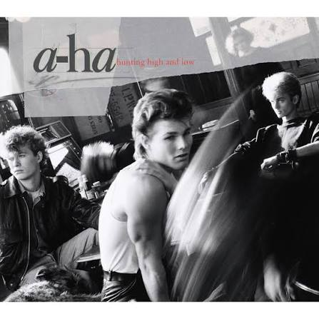

Lyrics
We're talking away
No, I don't know what I'm to say
I'll say it anyway
Today is another day to find you
Shyin' away
Oh, I'll be comin' for your love, okay
Take on me
(Take on me)
Take me on
(Take on me)
I'll be gone
In a day or two
So needless to say
I'm odds and ends
But I'll be stumblin' away
Slowly learnin' that life is okay
Say after me
It's no better to be safe than sorry
Take on me
(Take on me)
Take me on
(Take on me)
I'll be gone
In a day or two
All the things that you say, yeah
Is it life or just to play my worries away?
You're all the things I've got to remember
You're shyin' away
I'll be comin' for you anyway
Take on me
(Take on me)
Take me on
(Take on me)
I'll be gone
In a day
I'll be gone (take on me)
(Take on me)
In a day (take me on)
(Take on me)
(Take on me)
(Take on me)
(Take me on)
(Take on me)